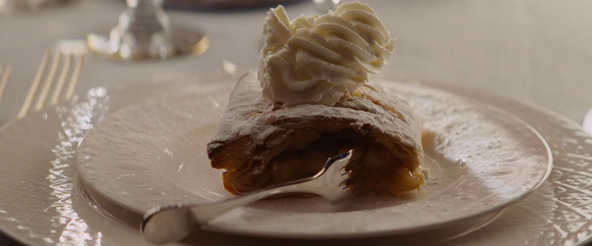

Col. Hans Landa's Apple Strudel

Servings Serves 6
Time 20 Min Prep, 30-35 Min Cook Time
Ingredients
- 375g ready-rolled puff pastry
- Flour for dusting
- 1 tbsp vegetable oil
- 8 tbsp raspberry conserve
- 4 tbsp ground almonds
- 4 medium bramley apples
- 170g raisins or sultanas
- ½ tsp ground cinnamon
- 1 tbsp milk
- Icing sugar for dusting
Method
- Preheat the oven to 180°C/fan160°C/gas 4. Cut the sheet of pastry in half widthways. On a lightly floured surface, roll one half out into a 30cm x 40cm rectangle – the pastry will get very thin.
- Lightly brush the pastry with half the oil, leaving a 2.5cm border. Using a palette knife, spread 4 tbsp of the conserve within the border and sprinkle 2 tbsp of the ground almonds over the top.
- Peel and grate the apples into a colander, then squeeze out as much juice as you can. Spread half over the pastry, making sure the apple is evenly spread, followed by half the raisins or sultanas and a sprinkling of cinnamon.
- Carefully roll from the long edge of the pastry to form a log. Turn so the seal is underneath, then tuck the ends under and brush all over with milk. Transfer to a lined baking sheet, then repeat with the remaining pastry and ingredients.
- Bake in the oven for 30-35 minutes until golden and puffed up. Leave to cool on a wire rack. When cold, sprinkle with some icing sugar, then cut into slices. Eat and enjoy.